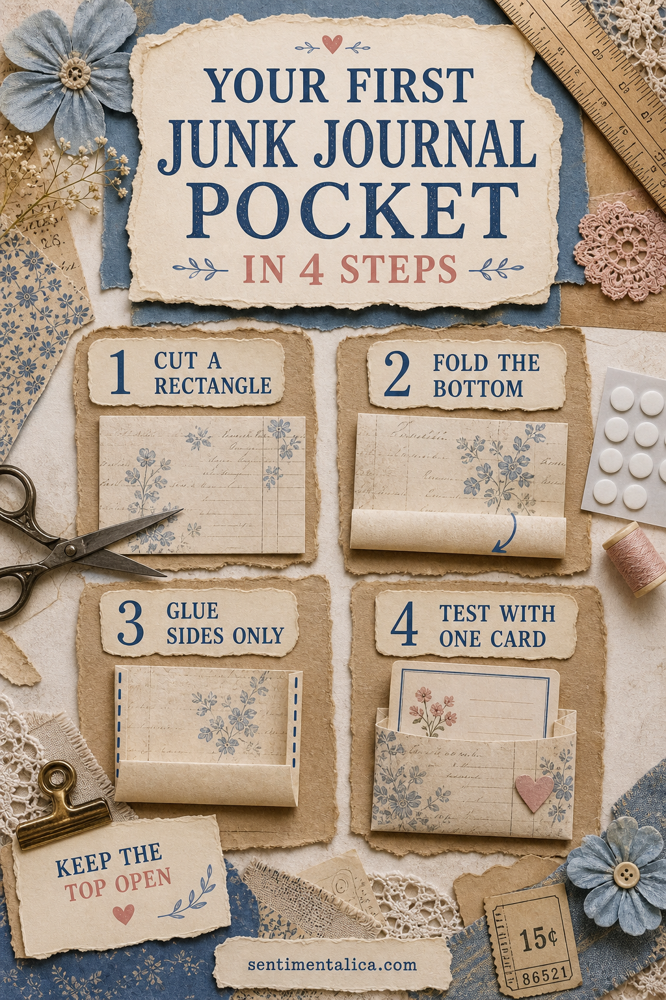
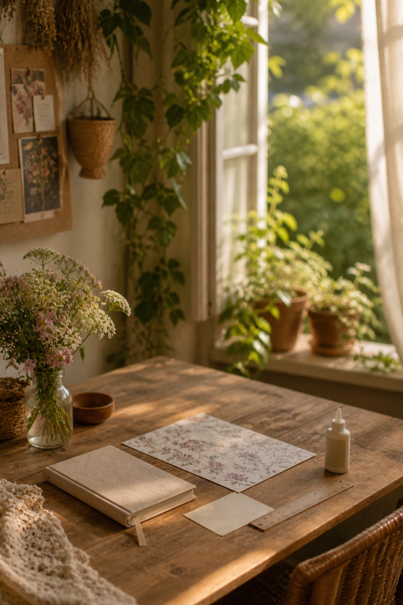

A simple pocket teaches several useful junk-journal skills at once: measuring loosely, folding cleanly, placing glue carefully, and leaving room for something meaningful.

1. Cut a rectangle
Choose medium-weight paper slightly wider than the card you want to hold. Place the card on top and leave about a finger-width on both sides plus extra paper at the bottom. Perfection is unnecessary; a ruler simply helps the pocket sit comfortably.
2. Fold the bottom
Fold up the lower edge by roughly two centimeters and crease it with the back of a spoon or a bone folder. This folded base is stronger than a raw glued edge and gives the card a clear place to stop.
3. Glue the sides only
Apply a narrow line along the folded side edges. Keep the top completely open and avoid a thick bead that squeezes inward. Press through clean scrap paper and allow the pocket to dry before testing it.

4. Test with one card
Slide the card in without forcing it. If it catches, wait until the glue is fully dry, then gently widen the opening with a clean ruler. Trim the card rather than pulling at the pocket seams.
Add a useful thumb notch
Trace a small coin at the top center and cut a shallow half-circle before attaching the pocket to the journal. This makes the card easier to grasp and immediately shows that the piece opens.
Attach it without stiffening the page
Glue the finished pocket to the outer half of a page, away from the spine. Use a thin layer around its back edges. Keep the contents light so the spread can close naturally.
Give the card a purpose
Write a date, short memory, list, or note to your future self. A pocket is most satisfying when it protects something you want to revisit, not when it exists only as decoration.
Choose paper that will cooperate
Medium-weight scrapbook paper, a sturdy envelope, or doubled book paper works well. Very thick card can make the journal bulky, while fragile paper may tear at the opening. If you love a thin piece, glue it to plain paper before cutting the pocket.
Fix common first-pocket problems
If the card falls out, deepen the pocket or add a small side tab. If the opening bows, reduce the contents and reinforce the top edge with a narrow folded strip. If glue seals the interior, wait until dry and gently separate it with a blunt ruler rather than scissors.
Try three useful placements
An outer page edge makes the pocket easy to reach. A lower corner supports a landscape card. A full-width pocket across the bottom can hold a folded letter. Keep pockets away from the spine and alternate their positions so bulk does not collect in one area.
Practice with a paper template
Once the first pocket fits, trace it onto scrap cardstock and label the fold line. The template turns future pockets into a quick project and helps you use paper offcuts that are already the right size.
Make the first one from ordinary paper. Once the construction feels easy, try book paper reinforced with a backing sheet, fabric tabs, or a decorative edge.
Image note: Some visuals in this article were created with AI and curated by Sentimentalica.